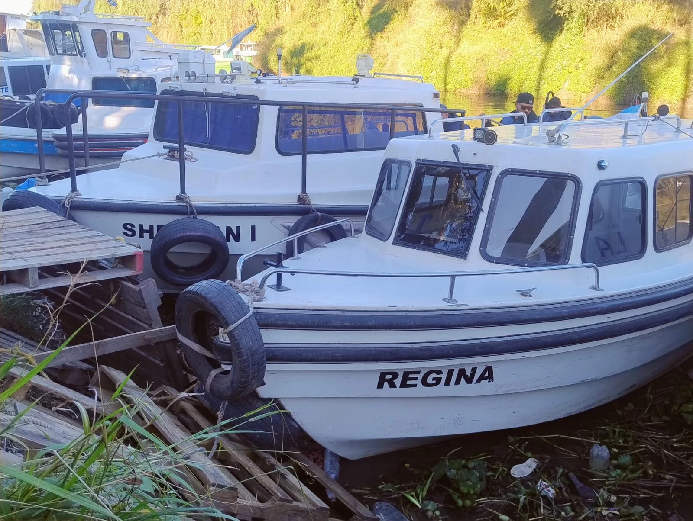
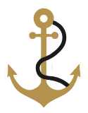
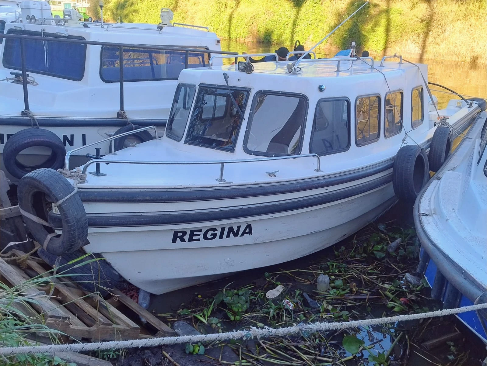
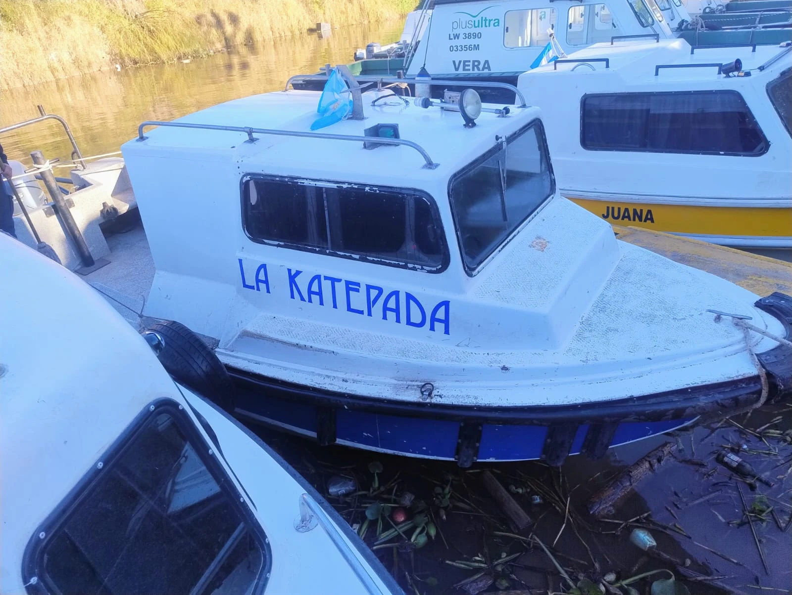
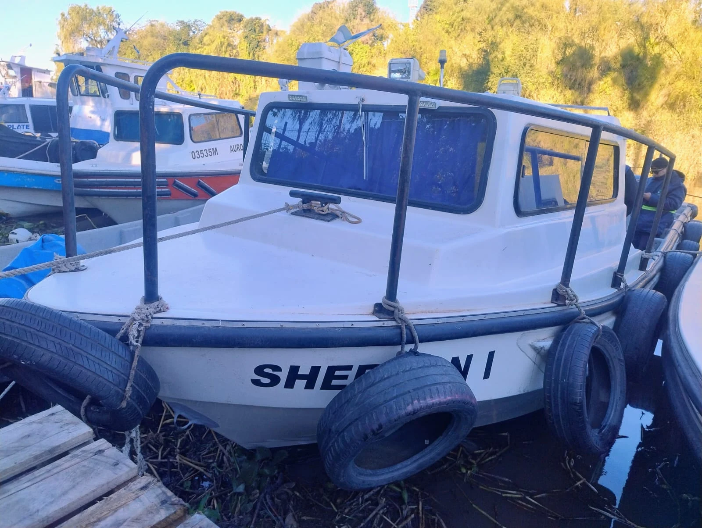

01 / FLOTALM Regina
12 pasajeros
- Eslora
- 8,38 m
- Manga
- 2,41 m
- Puntal
- 1,13 m

LIGHTSHIP MARITIME SERVICES
SERVICIOS MARÍTIMOS & FLUVIALES
Conectamos personas, cargas y soluciones.
Logística portuaria con compromiso, seguridad
y la mirada puesta en tu próximo destino.
01 / NUESTRA EMPRESA
Somos Lightship. Un equipo al servicio de la actividad marítima, fluvial y portuaria.
Desde 2022 brindamos soluciones ágiles a operadores, agencias, charters, coordinadores, surveyors y talleres navales. Acompañamos cada etapa de la cadena de transporte y producción de nuestra región agroexportadora.
Contamos con embarcaciones y personal capacitado para responder a las necesidades de cada tarea, con una forma de trabajar simple, efectiva y transparente.
02 / LO QUE HACEMOS
Servicios para buques de ultramar, remolcadores, puertos, talleres navales y fondeaderos de barcos y barcazas.
Asistencia a la operativa diaria, con coordinación y respuesta para cada necesidad.
Desde 2023 ampliamos nuestros servicios para acompañar las necesidades de las instalaciones portuarias.
Servicios de limpieza adaptados a los sectores de producción y almacenamiento.
Acompañamos a los actores de la cadena fluvial y marítima, buscando ser un puente directo y eficaz entre cada cliente y sus objetivos.
Consultanos por tu proyecto →03 / NUESTRAS EMBARCACIONES
Tres embarcaciones para traslado de pasajeros, cargas y apoyo a las operaciones fluviales.

01 / FLOTA12 pasajeros

02 / FLOTA9 pasajeros

03 / FLOTA9 pasajeros
Servicios de pasaje, carga, amarre y desamarre, traslado de residuos y colocación de barreras antiderrames. Consultá disponibilidad para tu operación.
04 / DÓNDE OPERAMOS
Acompañamos la actividad portuaria y fluvial desde Diamante hasta Arroyo Seco.
Coordinemos tu próximo servicio ↗05 / LIGHTSHIP EN ACCIÓN
Próximamente compartiremos videos de nuestras operaciones. Mientras tanto, conocé nuestra galería de imágenes.
06 / ESTAMOS EN CONTACTO
Contanos qué necesitás. Nuestro equipo coordina con vos la respuesta para tu servicio.
Dr. José Ingenieros 1332 · CP 2200
San Lorenzo, Santa Fe · República Argentina